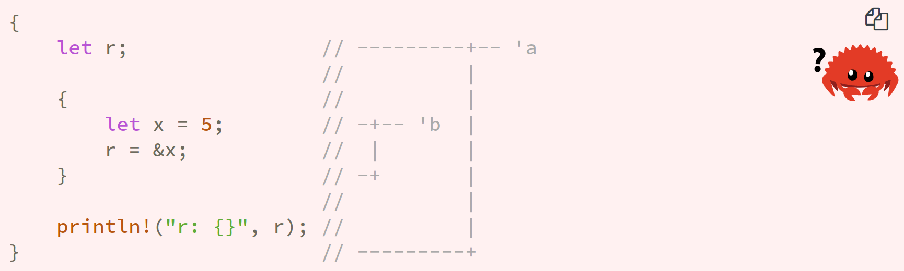
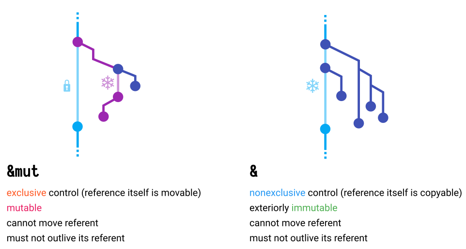
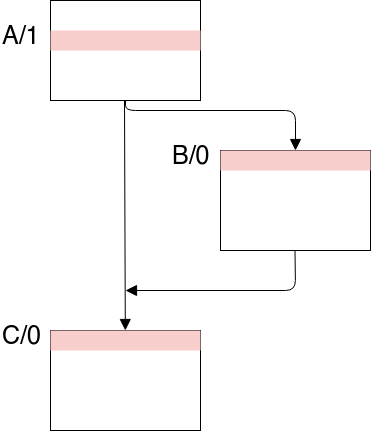
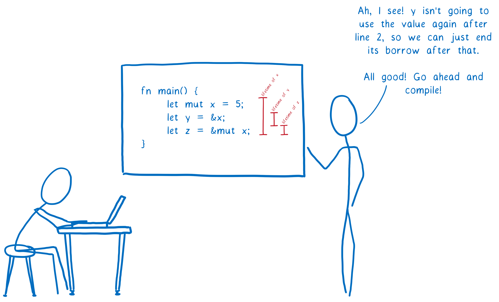

class: center, middle .title[How NLL make life easier] <br/> <br/> <br/> <br/> .center[] <br/> <br/> .author[Rnic / H.-S Zheng] <br/> <br/> <br/> .date[April 17, 2019] <br/> --- # About Me <br/> <br/> Rnic / 鄭弘昇 ‣ Telegram: [{ t.me/@rnicinr }](https://t.me/@rnicinr) ‣ <span style="color:#a64dff">**Emacs**</span> 教派的信徒 --- # Outline * .highlight[**Lifetimes Concept**] * What is Lifetimes ? * Subtyping * .highlight[**NLL**] * Phases of Borrow checker * Solving constraints * Future and Alias-based formulation --- class: center, middle # Lifetimes Concept .center[] --- # .center[Borrow] .center[] .footnote[(by. https://rufflewind.com/img/rust-move-copy-borrow.png)] -- <br/> .center[**How long does it borrow ?**] -- .center[.highlight[**NLL:] What is can borrowed here ?**] --- # .center[Borrow] A .pink[borrow] will generate a .pink[reference], and a reference will tagged with a .pink[lifetime] ### Borrow -- → Reference -- --- Lifetime -- ```rust let r; { let x = 5; r = &x; } println!("{}", r); ``` --- # .center[Borrow] A .pink[borrow] will generate a .pink[reference], and a reference will tagged with a .pink[lifetime] ### Borrow → Reference --- Lifetime ```rust let r; { let x = 5; r = &'b x; // -+-- 'b // | *} // -+ println!("{}", r); // ``` -- <br/> ## .pink[.center[**Lifetime must smaller than Scope**]] --- # .center[Lifetimes] ## .center[.highlight[Set of points on CFG]] -- <br/> .center[] --- # .center[Lifetimes] .pull-left[ ```rust let mut foo: T = ...; let mut bar: T = ...; let p: &'p T; p = &'foo foo; if condition { print(*p); p = &'bar bar; } print(*p); ``` ] .pull-right[ ```rust A [ p = &foo ] [ if condition ] ----\ (true) | | | B v | [ print(*p) ] | [ ... ] | [ p = &bar ] | [ ... ] | [ goto C ] | | +-------------/ | C v [ print(*p) ] [ return ] ``` ] --- # .center[Lifetimes] .pull-left[ ```rust let mut foo: T = ...; let mut bar: T = ...; let p: &'p T; *p = &'foo foo; if condition { print(*p); p = &'bar bar; } print(*p); ``` ] .pull-right[ ```rust A [ p = &foo ] *[ if condition ] ----\ (true) | | | B v * | [ print(*p) ] | [ ... ] | [ p = &bar ] | [ ... ] | [ goto C ] | | +-------------/ | C v *[ print(*p) ] [ return ] ``` ```rust 'p: { A/1, B/0, B/3, B/4, C/0 } 'foo: { A/1, B/0, C/0 } 'bar: { B/3, B/4, C/0 } ``` ] --- # .center[Lifetimes] ## Original Limits ```rust let mut s = "hello".to_string(); let mut c = || s += " world"; // captured by &mut and c become FnMut c(); println!("{}", s); ``` -- ``` | let mut c = || s += " world"; | -- - previous borrow occurs due to use of `s` in closure | | | mutable borrow occurs here | c(); | println!("{}", s); | ^ immutable borrow occurs here | } | - mutable borrow ends here ``` --- # .center[Lifetimes] ## How to solve it ? ```rust let mut s = "hello".to_string(); let mut c = || s += " world"; ---+--- 'a | c(); | | println!("{}", s); -----+--- 'b | ------+ ``` -- ```rust let mut s = "hello".to_string(); * { let mut c = || s += " world"; ---+--- 'a | c(); | * } ----+ println!("{}", s); ----+--- 'b ``` --- # .center[Subtyping] .center[`'a : 'b` : lifetimes of `'a` is outlives `'b`] -- ```rust let p: &'p T; +--------+ | | p = &'foo foo; 'foo +----+ Borrow +----> 'p | | +--------+ ``` --- # .center[Subtyping] .center[`'a : 'b` : lifetimes of `'a` is outlives `'b`] ```rust let p: &'p T; +--------+ | | p = &'foo foo; 'foo +----+ : +----> 'p | | ______________ +--------+ 'foo : 'p ``` --- # .center[Variance] .pull-left[ <style type="text/css"> .tg {border-collapse:collapse;border-spacing:0;} .tg td{font-family:Arial, sans-serif;font-size:14px;padding:10px 5px;border-style:solid;border-width:1px;overflow:hidden;word-break:normal;border-color:black;} .tg th{font-family:Arial, sans-serif;font-size:14px;font-weight:normal;padding:10px 5px;border-style:solid;border-width:1px;overflow:hidden;word-break:normal;border-color:black;} .tg .tg-60uc{font-size:16px;border-color:#000000;text-align:center;vertical-align:top} .tg .tg-ltfh{font-size:16px;background-color:#9aff99;border-color:#000000;text-align:center;vertical-align:top} </style> <table class="tg"> <tr> <th class="tg-60uc"></th> <th class="tg-60uc">'a</th> <th class="tg-60uc">T</th> <th class="tg-60uc">U</th> </tr> <tr> <td class="tg-60uc">&'a T<br></td> <td class="tg-60uc">covariant</td> <td class="tg-60uc">covariant</td> <td class="tg-60uc"></td> </tr> <tr> <td class="tg-60uc">&'a mut T </td> <td class="tg-60uc">covariant<br></td> <td class="tg-ltfh">invariant</td> <td class="tg-60uc"></td> </tr> <tr> <td class="tg-60uc">Box<T></td> <td class="tg-60uc"></td> <td class="tg-60uc">covariant<br></td> <td class="tg-60uc"></td> </tr> <tr> <td class="tg-60uc">Vec<T></td> <td class="tg-60uc"></td> <td class="tg-60uc">covariant<br></td> <td class="tg-60uc"></td> </tr> <tr> <td class="tg-60uc">UnsafeCell<T></td> <td class="tg-60uc"></td> <td class="tg-ltfh">invariant</td> <td class="tg-60uc"></td> </tr> <tr> <td class="tg-60uc">Cell<T></td> <td class="tg-60uc"></td> <td class="tg-ltfh">invariant</td> <td class="tg-60uc"></td> </tr> <tr> <td class="tg-60uc">fn(T) -> U</td> <td class="tg-60uc"></td> <td class="tg-60uc">contravariant</td> <td class="tg-60uc">covariant</td> </tr> <tr> <td class="tg-60uc">*const T</td> <td class="tg-60uc"></td> <td class="tg-60uc">covariant<br></td> <td class="tg-60uc"></td> </tr> <tr> <td class="tg-60uc">*mut T</td> <td class="tg-60uc"></td> <td class="tg-ltfh">invariant</td> <td class="tg-60uc"></td> </tr> </table> ] .pull-right[ ``` +---+---+---+---+ | X | 0 | + | - | +---------------+ 0: invariant | 0 | 0 | 0 | 0 | +: convariant +---------------+ -: contravariant | + | 0 | + | - | +---------------+ | - | 0 | - | + | +---+---+---+---+ +---+---+---+---+ | ^ | 0 | + | - | +---------------+ | 0 | 0 | 0 | 0 | +---------------+ | + | 0 | + | 0 | +---------------+ | - | 0 | 0 | - | +---+---+---+---+ ``` ] .footnote[(by. https://medium.com/@kennytm/variance-in-rust-964134dd5b3e)] --- ## .center[Example] ```rust let a = 5; let b = &a; ``` --- ## .center[Example] ```rust let a = 5; let b: &'b i32 = &'a a; _______________________ 'a : 'b ``` -- ```rust let x = 5; let p = Cell::new(&x); ``` --- ## .center[Example] ```rust let a = 5; let b: &'b i32 = &'a a; _______________________ 'a : 'b ``` ```rust let x = 5; let p: Cell<&'p i32> = Cell::new(&'x x); ________________________________________ 'x: 'p 'p: 'x ``` --- class: center, middle # NLL .center[] --- ## .center[Problem] .footnote[[(play: link to play.rust-lang.org/ of this code with eidtion=2015)](https://play.rust-lang.org/?version=stable&mode=debug&edition=2015&gist=6deffeeb7145662d49b87dbe35dee1a1)] ```rust fn process_or_default(map: &mut HashMap<usize, String>, key: usize) { match map.get_mut(&key) { Some(value) => { process(value); return; } None => { map.insert(key, V::default()); } } } ``` --- ## .center[Problem] .footnote[[(play: link to play.rust-lang.org/ of this code with eidtion=2015)](https://play.rust-lang.org/?version=stable&mode=debug&edition=2015&gist=6deffeeb7145662d49b87dbe35dee1a1)] ```rust fn process_or_default(map: &mut HashMap<usize, String>, key: usize) { match map.get_mut(&key) { --------------+-- 'a Some(value) => { | process(value); | return; | } | None => { | map.insert(key, V::default()); ----- 'b } | } <--------------------------------------+ } ``` ``` | match map.get_mut(&key) { | --- first mutable borrow occurs here ... | map.insert(key, V::default()); | ^^^ second mutable borrow occurs here | } | } | - first borrow ends here ``` --- ## .center[Solution] .footnote[[(play: link to play.rust-lang.org/ of this code with eidtion=2015)](https://play.rust-lang.org/?version=stable&mode=debug&edition=2015&gist=6deffeeb7145662d49b87dbe35dee1a1)] ```rust fn process_or_default(map: &mut HashMap<usize, String>, key: usize) { match map.get_mut(&key) { Some(value) => { process(value); return; } None => { * } } * map.insert(key, V::default()); } ``` -- <br/> ## .center[.pink[But it's annoying]] --- # .center[Phases of Borrowck] <br/> ### 1. Build liveness and constraints ### 2. Infer the lifetimes ### 3. Compute loans in scope ### 4. Check action and report errors --- class: center, middle # Demo .footnote[(ref. Prototype of NLL https://github.com/nikomatsakis/borrowck)] --- # .center[Location-aware subtyping] <br/> .center[`'a : 'b` : Lifetimes of `'a` must outlives `'b` ] --- # .center[Location-aware subtyping] <br/> .center[`('a : 'b) @ P` : `'a` must include all points in `'b` .pink[**that are reachable from**] location `P` ] -- .center[.highlight[**Doing DFS on CFG**]] --- ## 1. Build liveness and contraints -- .pull-left[ ```rust let foo = 2; let bar = 5; let mut p: &i32; p = &foo; if condition { do_something(p); p = &bar; } do_something(p); ``` ] --- ## 1. Build liveness and contraints .pull-left[ ```rust let foo = 2; let bar = 5; let mut p: &i32; p = &foo; if condition { do_something(p); p = &bar; } do_something(p); ``` ] .pull-right[ ```rust A 0[ p = &foo ] 1[ if condition ]----\ (true) | | | B v | 0[ do_something(p) ] | 1[ ... ] | 2[ p = &bar ] | 3[ ... ] | 4[ goto C ] | | +-------------/ | C v 0[ do_something(p) ] 1[ return ] ``` ] --- ## 1. Build .highlight[liveness] and contraints > **liveness**: > a variable 𝑣 is live at point 𝑝 if and only if > there exists a path in CFG from 𝑝 to a use of 𝑣 along which 𝑣 is not redefined. .pull-right[ ```rust A 0[ p = &foo ] 1[ if condition ]----\ (true) | | | B v | 0[ do_something(p) ] | 1[ ... ] | 2[ p = &bar ] | 3[ ... ] | 4[ goto C ] | | +-------------/ | C v 0[ do_something(p) ] 1[ return ] ``` ] --- ## 1. Build .highlight[liveness] and contraints > **liveness**: > a variable 𝑣 is .pink[**live at point 𝑝**] if and only if > there exists a path in CFG .pink[**from 𝑝 to a use of 𝑣**] along which 𝑣 is not redefined. .pull-right[ ```rust A 0[ p = &foo ] 1[ if condition ]----\ (true) | | | B v | 0[ do_something(p) ] | 1[ ... ] | 2[ p = &bar ] | 3[ ... ] | 4[ goto C ] | | +-------------/ | C v 0[ do_something(p) ] 1[ return ] ``` ] -- .pull-left[ ```rust 'p: { 'foo: { 'bar: { ``` ] --- ## 1. Build .highlight[liveness] and contraints > **liveness**: > a variable 𝑣 is .pink[**live at point 𝑝**] if and only if > there exists a path in CFG .pink[**from 𝑝 to a use of 𝑣**] along which 𝑣 is not redefined. .pull-right[ ```rust A 0[ p = &foo ] *1[ if condition ]----\ (true) | | | B v * | 0[ do_something(p) ] | 1[ ... ] | 2[ p = &bar ] * | 3[ ... ] * | 4[ goto C ] | | +-------------/ | C v *0[ do_something(p) ] 1[ return ] ``` ] .pull-left[ ```rust 'p: { A/1, B/0, B/3, B/4, C/0 'foo: { 'bar: { ``` ] --- ## 1. Build liveness and .highlight[contraints] > **contraints**: > it's mean lifetime contraints which is converted from subtyping rule. .pull-right[ ```rust A 0[ p = &foo ] 1[ if condition ]----\ (true) | | | B v | 0[ do_something(p) ] | 1[ ... ] | 2[ p = &bar ] | 3[ ... ] | 4[ goto C ] | | +-------------/ | C v 0[ do_something(p) ] 1[ return ] ``` ] .pull-left[ ```rust 'p: { A/1, B/0, B/3, B/4, C/0 'foo: { 'bar: { ``` ] --- ## 1. Build liveness and .highlight[contraints] > **contraints**: > it's mean lifetime contraints which is .pink[**converted from subtyping rule**], e.g. `(&'a T : &'b U)` will convert to `('a : 'b)`. .pull-right[ ```rust A 0[ p = &foo ] 1[ if condition ]----\ (true) | | | B v | 0[ do_something(p) ] | 1[ ... ] | 2[ p = &bar ] | 3[ ... ] | 4[ goto C ] | | +-------------/ | C v 0[ do_something(p) ] 1[ return ] ``` ] .pull-left[ ```rust 'p: { A/1, B/0, B/3, B/4, C/0 'foo: { 'bar: { ``` ] --- ## 1. Build liveness and .highlight[contraints] > **contraints**: > it's mean lifetime contraints which is .pink[**converted from subtyping rule**]. .pull-right[ ```rust p: &'p T; A 0[ p = &'foo foo ] 1[ if condition ]---\ (true) | | | B v | 0[ do_something(p) ] | 1[ ... ] | 2[ p = &'bar bar ] | 3[ ... ] | 4[ goto C ] | | +-------------/ | C v 0[ do_something(p) ] 1[ return ] ``` ] .pull-left[ ```rust 'p: { A/1, B/0, B/3, B/4, C/0 'foo: { 'bar: { ``` ] --- ## 1. Build liveness and .highlight[contraints] > **contraints**: > it's mean lifetime contraints which is .pink[**converted from subtyping rule**]. .pull-right[ ```rust p: &'p T; A 0[ p = &'foo foo ] 1[ if condition ]---\ (true) | | | B v | 0[ do_something(p) ] | 1[ ... ] | 2[ p = &'bar bar ] | 3[ ... ] | 4[ goto C ] | | +-------------/ | C v 0[ do_something(p) ] 1[ return ] ``` ] -- .pull-left[ <br/> - <span style="font-family:monospace; font-size:24px;">**( .pink['foo : 'p] ) .purple[@ A/0]**</span> ] -- .pull-left[ - <span style="font-family:monospace; font-size:24px;">**( .pink['bar : 'p] ) .purple[@ B/2]**</span> ] --- ## 1. Build liveness and .highlight[contraints] > **contraints**: > it's mean lifetime contraints which is .pink[**converted from subtyping rule**]. ```rust 'p: { A/1, B/0, B/3, B/4, C/0 } 'foo: { 'bar: { `('foo : 'p) @ A/0` `('bar : 'p) @ B/2` ``` -- .center[ ### Infer the lifetimes ] -- .center[ ### .highlight[**Solving contraints (use DFS)**] ] --- ## 2. Infer lifetimes (solving contraints) .pull-left[ ```rust A 0[ p = &foo ] 1[ if condition ]----\ (true) | | | B v | 0[ do_something(p) ] | 1[ ... ] | 2[ p = &bar ] | 3[ ... ] | 4[ goto C ] | | +-------------/ | C v 0[ do_something(p) ] 1[ return ] ``` ] .pull-right[ ```rust 'p: { A/1, B/0, B/3, B/4, C/0 } 'foo: { 'bar: { ('foo : 'p) @ A/0 ('bar : 'p) @ B/2 ``` ] --- ## 2. Infer lifetimes (solving contraints) .pull-left[ ```rust A >> 0[ p = &foo ] *1[ if condition ]----\ (true) | | | B v * | 0[ do_something(p) ] | 1[ ... ] | 2[ p = &bar ] | 3[ ... ] | 4[ goto C ] | | +-------------/ | C v *0[ do_something(p) ] 1[ return ] ``` ] .pull-right[ ```rust 'p: { A/1, B/0, B/3, B/4, C/0 } 'foo: { 'bar: { >>('foo : 'p) @ A/0 ('bar : 'p) @ B/2 ``` ] --- ## 2. Infer lifetimes (solving contraints) .pull-left[ ```rust A 0[ p = &foo ] 1[ if condition ]----\ (true) | | | B v | 0[ do_something(p) ] | 1[ ... ] | 2[ p = &bar ] | 3[ ... ] | 4[ goto C ] | | +-------------/ | C v 0[ do_something(p) ] 1[ return ] ``` ] .pull-right[ ```rust 'p: { A/1, B/0, B/3, B/4, C/0 } 'foo: { A/1, B/0, C/0 'bar: { ('foo : 'p) @ A/0 ('bar : 'p) @ B/2 ``` ] --- ## 2. Infer lifetimes (solving contraints) .pull-left[ ```rust A 0[ p = &foo ] 1[ if condition ]----\ (true) | | | B v | 0[ do_something(p) ] | 1[ ... ] >> | 2[ p = &bar ] * | 3[ ... ] * | 4[ goto C ] | | +-------------/ | C v *0[ do_something(p) ] 1[ return ] ``` ] .pull-right[ ```rust 'p: { A/1, B/0, B/3, B/4, C/0 } 'foo: { A/1, B/0, C/0 'bar: { ('foo : 'p) @ A/0 >>('bar : 'p) @ B/2 ``` ] --- ## 2. Infer lifetimes (solving contraints) .pull-left[ ```rust A 0[ p = &foo ] 1[ if condition ]----\ (true) | | | B v | 0[ do_something(p) ] | 1[ ... ] >> | 2[ p = &bar ] * | 3[ ... ] * | 4[ goto C ] | | +-------------/ | C v *0[ do_something(p) ] 1[ return ] ``` ] .pull-right[ ```rust 'p: { A/1, B/0, B/3, B/4, C/0 } 'foo: { A/1, B/0, C/0 'bar: { B/3, B/4, C/0 ('foo : 'p) @ A/0 ('bar : 'p) @ B/2 ``` ] --- ## 2. Infer lifetimes (solving contraints) <br/> ```rust 'p: { A/1, B/0, B/3, B/4, C/0 } 'foo: { A/1, B/0, C/0 } 'bar: { B/3, B/4, C/0 } ``` .center[<span style="font-size: 100px; color: #00cc66"> ✔ </span>] --- ## 3. Compute loans in scope > **loans**: a set of borrow expressions -- ```rust A/0 [ p = &'foo foo; ] // loan L0 ``` ```rust loan L0 { point: A/0, path: foo, kind: shared, region 'foo { A/1, B/0, C/0 } } ``` --- ## 3. Compute loans in scope > **loans**: a set of borrow expressions Borrow checker will compute loans at each point via .pink[**fixed-point dataflow computation**] with .pink[**transfer function**]: -- ```text - Kill Li @ P If P ∉ Li.region - Gen Li @ P If Borrow expression occur @ P - Kill Li @ P If LV is redefined && LV ∈ Li.path ``` --- ## 3. Compute loans in scope ```rust CFG Loans @ each point A 0[ p = &foo ] "gen L0" path: foo, region: { A/1, B/0, C/0 } 1[ if condition ]----\ (true) L0 | | | B v | 0[ do_something(p) ] L0 | 1[ ... ] "kill L0" (rule 1) | 2[ p = &bar ] "gen L1" path: bar, region: { B/3, B/4, C/0 } | 3[ ... ] L1 | 4[ goto C ] L1 | | +-------------/ | v 0[ do_something(p) ] L0, L1 1[ return ] "kill L0, L1" Regions _________________________________ 'p: { A/1, B/0, B/3, B/4, C/0 } 'foo: { A/1, B/0, C/0 } 'bar: { B/3, B/4, C/0 } ``` --- ## 4. Check action and report Error Check action at each point which dependent on loans we computed for each point. ```rust fn access_legal(lvalue, is_shallow, is_read) { let relevant_borrows = select_relevant_borrows(lvalue, is_shallow); for borrow in relevant_borrows { // shared borrows like `&x` still permit reads from `x` (but not writes) if is_read && borrow.is_read { continue; } // otherwise, report an error, because we have an access // that conflicts with an in-scope borrow report_error(); } } ``` .pull-left[ <style type="text/css"> .tg {border-collapse:collapse;border-spacing:0;} .tg td{font-family:Arial, sans-serif;font-size:14px;padding:10px 5px;border-style:solid;border-width:1px;overflow:hidden;word-break:normal;border-color:black;} .tg th{font-family:Arial, sans-serif;font-size:14px;font-weight:normal;padding:10px 5px;border-style:solid;border-width:1px;overflow:hidden;word-break:normal;border-color:black;} .tg .tg-x6qq{background-color:#dae8fc;border-color:inherit;text-align:left;vertical-align:top} .tg .tg-n533{font-weight:bold;background-color:#dae8fc;border-color:inherit;text-align:center;vertical-align:top} .tg .tg-0pky{border-color:inherit;text-align:left;vertical-align:top} </style> <table class="tg"> <tr> <th class="tg-x6qq"></th> <th class="tg-n533">read</th> <th class="tg-n533">write</th> </tr> <tr> <td class="tg-n533">shallow</td> <td class="tg-0pky"></td> <td class="tg-0pky">storageDead()<br>lvalue</td> </tr> <tr> <td class="tg-n533">deep</td> <td class="tg-0pky">rvalue(copy)<br>&lvalue</td> <td class="tg-0pky">rvalue(move)<br>&mut lvalue<br>Drop(lvalue)</td> </tr> </table> ] .pull-right[ ``` lvalue = rvalue; ``` ] --- # .center[We Make it !] -- ```rust A/0 | let mut x = 42; A/1 | let y = &x; A/2 | x += 1; ``` -- ``` x: { A/0, A/1, A/2 } y: { A/1 } ``` -- ⇒ y will not live at A/2 -- ⇒ Legal for you to write x --- class: center, middle # Future .center[] .footnote[(Image. http://www.mccallstudios.com/)] --- ## .center[Problem] .footnote[(ref. [an aliased-based formulation of the borrow checker](http://smallcultfollowing.com/babysteps/blog/2018/04/27/an-alias-based-formulation-of-the-borrow-checker) )] .center[We want to traversal the Thing] ```rust struct Thing; impl Thing { fn maybe_next(&mut self) -> Option<&mut Self> { None } } fn main() { n let mut temp = &mut Thing; loop { match temp.maybe_next() { Some(v) => { temp = v; } None => { } } } } ``` --- ## .center[Problem] .footnote[(ref. [an aliased-based formulation of the borrow checker](http://smallcultfollowing.com/babysteps/blog/2018/04/27/an-alias-based-formulation-of-the-borrow-checker) )] .center[We want to traversal the Thing] ```rust struct Thing; impl Thing { fn maybe_next(&mut self) -> Option<&mut Self> { None } } fn main() { let mut temp = &mut Thing; loop { match temp.maybe_next() { ^^^^ "mutable borrow starts here in previous iteration of loop" Some(v) => { temp = v; } None => { } } } } ``` -- .pink[**Reason:**] In `None` arm, `temp` was not reassigned. -- .pink[**Why accepted in the future?**] -- 1. `Some` path: Killed the `loan` 2. `None` path: `requires relation` is dropped. --- class: center ## What is change ? -- <br/> .center[.pink[**Region 'a:**] Set of points in CFG] ```rust { A/0, A/1, ... } ``` --- class: center ## What is change ? <br/> .center[.pink[**Region 'a:**] ~~Set of points in CFG]~~ **Set of Loans** ```rust { L0, L1 ... } ``` -- <br/> And with some rules, but I not mentioned in this talk. --- ## .center[I have not mentioned in this talk] <br/> - **Reborrow contraints :** supporting prefixes rule - **Infinite Loops :** add unwind edge - **Drop variable :**n [may_dangle] → not consider live - **Named Lifetimes** : add end_regions --- # Command ```rust "Gen MIR information:" rustc --dump-mir=main src/main.rs "or" rustc -Z unpretty=mir src/main.rs "Test NLL Borrowck prototype:" env NLL_DEBUG=true cargo run ../test/foobar.nll ``` --- class: center, middle # That's All. # QA <br/> .center[**Rust Taiwan @ https://t.me/rust_tw **]